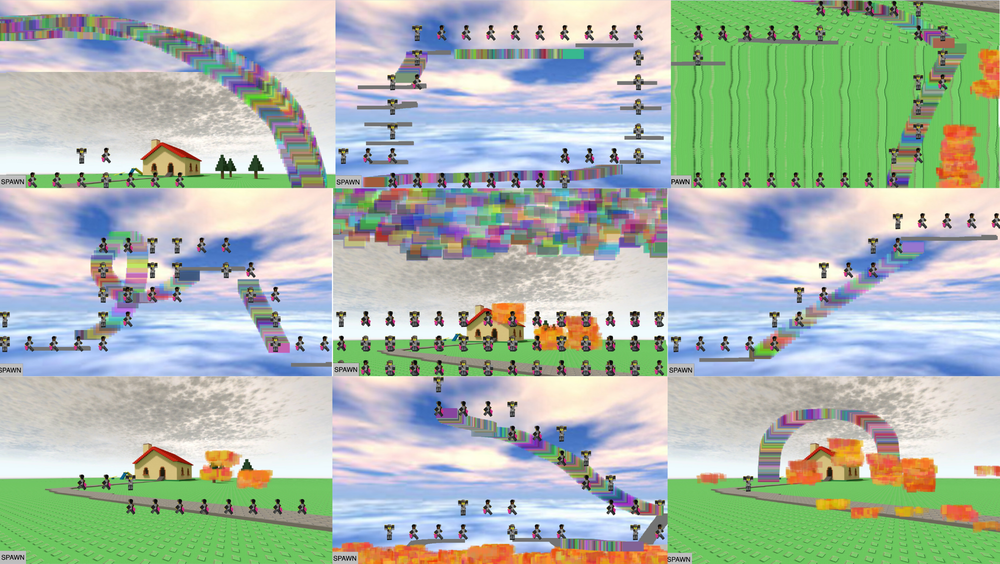

Project 1: Algorithms
Project 1: Algorithms
Exercise 1: Wild Wallpaper Face
This project focuses on basic intializing concepts such as overloaded functions and variable assignment ('let') to create offset positioning. Regular and nested 'for loop' statements were utilized to create the wicker and grass background. Regular and nested 'if' and 'else' statements were mainly utilized for background and face movement. Basic drawing and color funcions such as ellipse(), rect(), triangle(), square(), quad(), stroke(), and fill() were used to create the faces and background. MouseX and mouseY were used to determine mouse clicks and where it hovers in order to trigger the random command that controls the background color. Operator shortcuts, specifically +=, was used for the variable assignments and to control moving parts. Console.log informs a users on their movement. There are two vertical and horizontal rollover regions and a clickable region within the green squares.
Run Exercise 1See code for Exercise 1
Excercise 2: Snap to Grid
This sketch explores movement through grid-based positioning that can tracked within the console.log. Global vairables are utilized to create images with the loadImage() command. Key events such as keyPressed() and the switch key statement track movement and make a selector form of logic. Toggle logic is seen within the wicker background generation with the usage of boolean logic (||) to allow either key case to be pressed. The color class is used to create the changing background colors, and general fill commands add style to text() and textFont() commands.
Run Exercise 2See code for Exercise 2
Project 1: Algorithmic Brushes, Stamps and Drawings
The idea of this project is to replicate the obbies in Roblox. One player draws the obby with the mouse and the other player uses the WASD keys to complete the obby. If there are places where the other player cannot reach, the creator will use their paths to help them get there, similar to how people cheat obbies in the early age of Roblox.
I utilized the paint and stamp function to distinguish the two players. There are three paint brushes to create different paths for the player to walk on. The first one is "cvPath" and is the basic gray rectangle that creates the "obby" part. The second path is "cvRainbowRoad" and creates a rectangular rainbow path that is intended to use after creating the course with the gray brush. The third brush is "cvFirePath" and is similar to cvRainbowRoad. Traditionally, players can only equip one colored rectangualr paths. This brush acts as a "glitch" like the player combined three paths in one to create a fire effect. The brush consists of randomly shaped rectangles to further show this effect.
I had a hard time trying to have the mouse player appear on the screen, probably because I'm trying to combine two opposite arguments within a function. All brushes have two or more arguments besides the first since that's the most basic one.
Code for Project 1
{kind=link}
{kind=link}
{kind=link}
{kind=link}
{kind=link}
